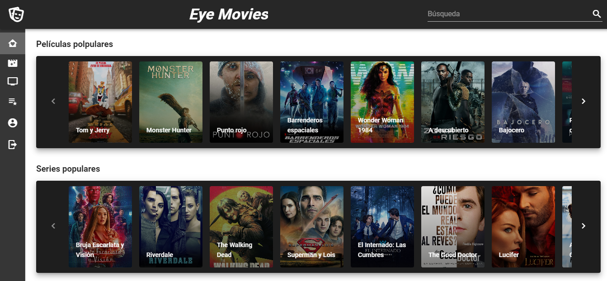

Eye movies
Página donde puedes crear tus propias listas de películas o series, la cual te ayudaría tanto para la próxima ocasión que desees ver una película que ya hayas visto o para recomendar alguna a un amigo.
Ir al proyecto